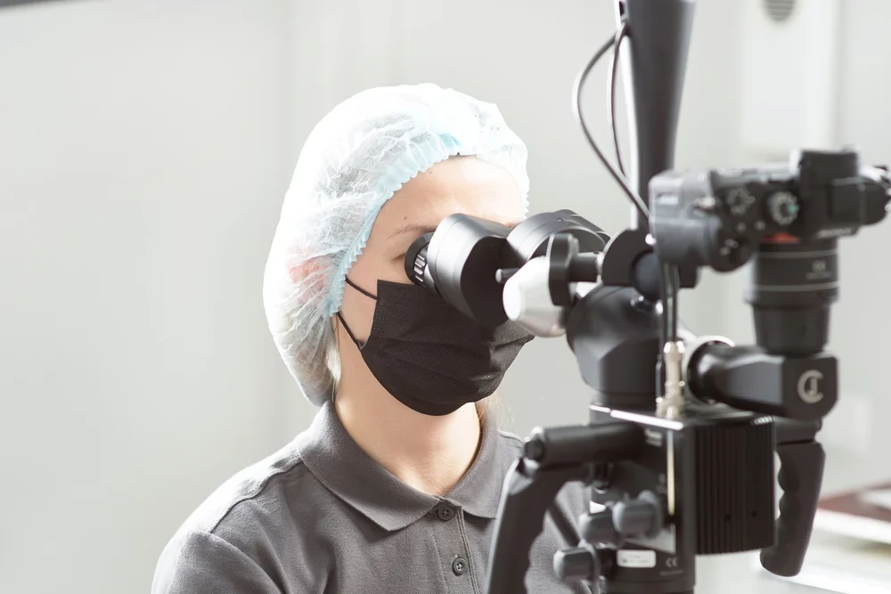

01 / 05
01 / 05Стоматолог-хирург, имплантолог, ортопед, терапевт
Даниелян Арам Яковлевич
СТАЖ25 лет
Опубликованные документы · 4 ↗01 СТОМАТОЛОГИЯ · ПРОКШИНО
Точная диагностика под микроскопом Zeiss, бережное лечение зубов и открытый прейскурант.

ПРОСТРАНСТВО · ПРОКШИНО
Фотографии пространства и приёма — из официальной галереи филиала.



КОМАНДА · 5 СПЕЦИАЛИСТОВ
Листайте карточки. Стаж и опубликованные сведения об образовании и документах — в профильных страницах.
01 / 05Стоматолог-хирург, имплантолог, ортопед, терапевт
 02 / 05
02 / 05 03 / 05
03 / 05 04 / 05
04 / 05 05 / 05
05 / 05КАТАЛОГ · 10 НАПРАВЛЕНИЙ
Откройте интересующий раздел и опубликованную позицию прайса. Это навигация по каталогу, а не медицинская рекомендация.
 01 · ДантистЪ
01 · ДантистЪПозиции имплантационных этапов приведены отдельно. Цена отдельного этапа не является стоимостью полного плана лечения.
ФИЛИАЛ · ПРОКШИНО
Москва, Коммунарка, проспект Магеллана, 5
Ежедневно · 09:00–21:00